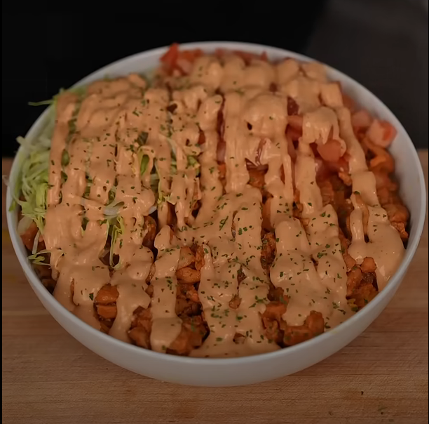

Home
Chipotle Chicken And Rice - By The Golden Balance

Description:
The Chipotle Chicken Over Rice recipe by The Golden Balance offers a vibrant
and flavorful take on a beloved classic. This dish features tender, marinated
chicken thighs served atop aromatic yellow rice, all generously drizzled with
a creamy chipotle sauce. It's a perfect balance of smoky, spicy, and tangy
flavors, ideal for a satisfying meal.
Ingredients:
- Boneless chicken
- Chipotle Sauce
- Honey
- Lime Juice
- Garlic Paste
- Sazon
- Paprika
- Dried Oregano
- onion
- Rice
- Sauce
Steps:
-
Marinade the chicken: Cut the chicken thighs into ½ inch thick strips and
add to a large bowl. Add the chipotle sauce, honey, lime juice, garlic
paste, sazon, paprika and oregano and toss everything together to fully
coat the chicken pieces in marinade. Let sit for at least 30 minutes and
up to 4 hours.
-
While the chicken marinades make your yellow rice: Heat a pot over medium
high and melt the ghee, add the washed rice, then the sazon, bouillon
powder and turmeric. Toast the rice and spices for 1 minute or until
fragrant and any liquid from the rice has evaporated. Add in 2 cups of
water and bring to a simmer. Reduce the heat to low and cover tightly with
a lid. Cook the rice according to the package instructions or until all
the liquid is absorbed and the rice is easily fluffed with a fork.
-
To make the sauce: To a blender, add the sour cream, mayonnaise, garlic,
chipotle sauce, honey, lime juice, salt, pepper, paprika and oregano and
blend until smooth. Taste and adjust seasonings then transfer to a squeeze
bottle.
-
Cook the chicken: Heat a large skillet over medium high and add about 1
Tbsp of ghee or oil. Once hot, add the chicken in one even layer and let
cook undisturbed for 2 minutes. Stir and flip the chicken so it browns on
all sides, about 1 minute, then add in the chopped onion for the last 4-5
minutes of cooking. Remove the pan from the heat and set aside to assemble.
-
Build your bowl: Layer rice on the bottom of a serving bowl, then add a
layer of cooked chicken and onions along with diced tomato and shredded
lettuce. Drizzle everything with chipotle cream sauce and serve.